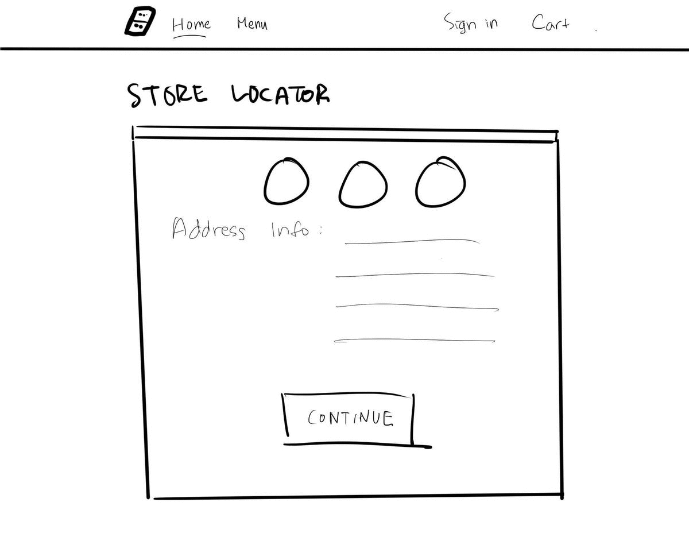

Domino’s Redesign
An unsolicited redesign of Domino’s online ordering process.
Timeline: 20 hours
Scope: Project management, UX research, Prototyping
Background
A couple months ago, I ordered a pizza from Domino’s to satisfy my unhealthy cravings. Now I love Domino’s, but going through their website was frustrating and maybe even made me lose my appetite a little (sad). More specifically, I found myself frustrated when using their Pizza Builder feature. For those of you who don’t know, this is Domino’s’ interactive “Build Your Own Pizza” tool. Pretty much one of their most important features as a business whose sole purpose is to make and deliver pizza.

After a few weeks and one more pizza order, I finally decided to take a shot at redesigning my favorite pizza company’s website. I felt that a lot of the User Experience could be executed better and improve through a more intuitive User Interface. The current UI is not exactly archaic, but could use an aesthetic update.
Please keep in mind that this redesign was unsolicited and just a personal project of mine. My design decisions were solely based on my experience as a returning customer and student designer. It’s impossible to fully understand the motivation behind their current design unless you work with them, and I’m sure they had their justifications for their design, whether it be technical or resource constraints, or monetization. With that in mind, I tried my best to redesign their order process while sticking to the look and feel of their visual brand.
Current Design Analysis
Before I began making any prototypes of my redesign, I first wanted to evaluate Domino’s current design. Here are the major pain points I identified along the way (concrete examples and images are shown later):
1. Information Overload - Clustered text may make users overwhelmed and unsure of what to do. This can cause users to spend too much time on a certain page, leading to frustration.
Example: There are a total of 26 toppings in the Toppings section of the Pizza Builder. As a result, the font size of these text elements are extremely small and hard to read.
2. Redundant Features and Text - There are recurring instances of the same features/text.
Example: My Order and the Cart features serve the same function.
3. Accessibility Issues - Poor accessibility practice = Poor user experience
Example: Low contrast text, and too many pop-up dialogs that interrupt and frustrate users, possibly leading them to cancel their order and/or lose interest.
Paper Prototyping
I took a moment to sketch some quick designs before committing to higher fidelity designs.
Paper Prototype
Redesign & UX Proposals
My redesign is broken up into 5 sections: Header, Menu Pages, Pizza Builder Page, and Checkout Pages.
#1 - Header

#2 - Menu Pages

#3 - Pizza Builder Page

* The video below demonstrates why (1) the menu items should be in grouped boxes, and (2) the Pizza Builder tool should have its own dedicated page instead of being a pop-up dialog.
(1) Text-to-speech (TTS) applications are not perfect. With proper usage of headings and grouped elements, TTS applications can read pages more accurately and orderly.
(2) The Pizza Builder is opened using a pop-up window. Keyboard Focus and TTS applications sometimes won’t recognize when this happens, so it continues to scan the initial page, not the pop-up. A visually impaired user will be unaware of how to build their pizza, unless they wait for their TTS application to read through the entire first page, including the footer. The user may abandon their order out of frustration.
#4 - Checkout Pages

Reflection
In hindsight, I realize I should have done a redesign of the mobile app, this project was a great opportunity to improve my technical and visual design skills and learn more about usability standards. I had a lot of fun doing my first redesign, so I just might make a mobile version for it.
Here’s the link to my interactive prototype. Feel free to play around with it! :)